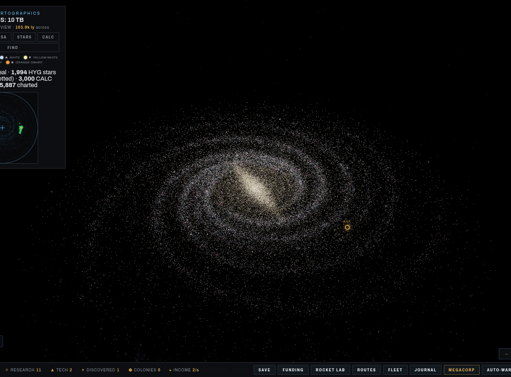
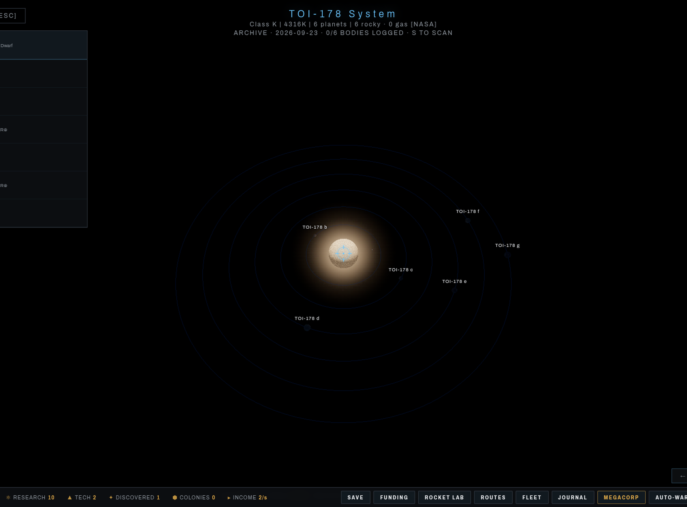
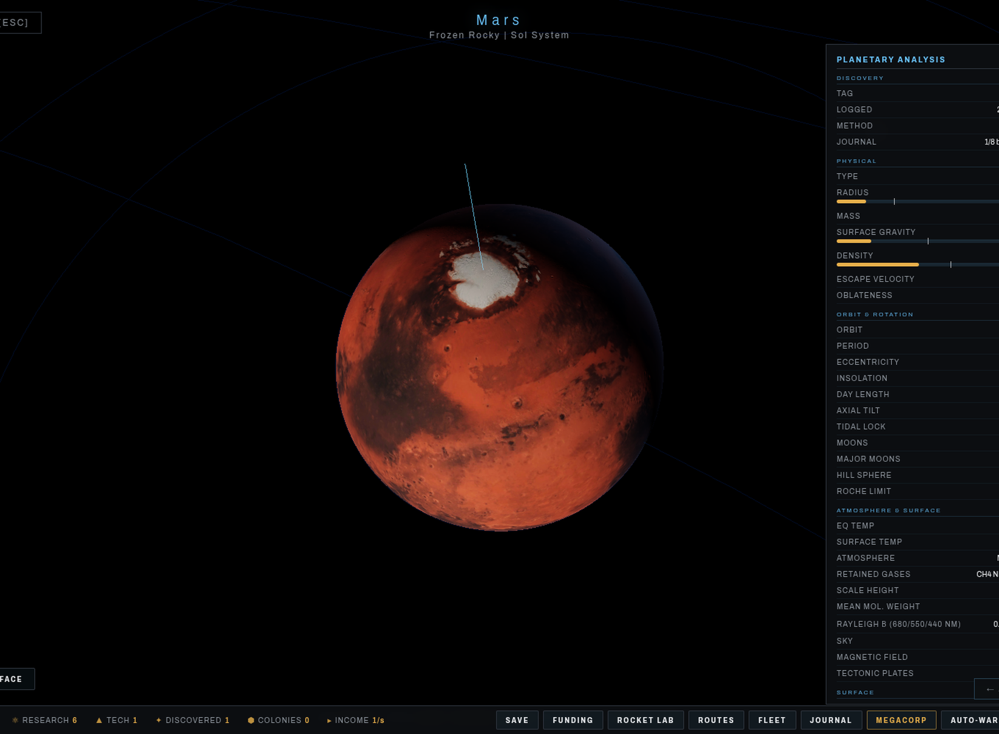

GALAXY EXPLORER • ROCKET ENGINEERING LAB • IDLE-TYCOON COLONIES • NASA DATA • WASM
An 80K-particle galaxy explorer with a real-data star map and idle empire layer.

A browser space game in three layers.
Four spiral arms, central bar, galactic bulge, and diffuse halo — all generated by compiled WASM bytecode for maximum performance and IP protection.
500 confirmed exoplanets fetched live from the NASA Exoplanet Archive TAP API. Real star temperatures, planet radii, masses, and orbit data.
Core algorithms (galaxy generation, procedural systems, planet textures) compiled from Rust to WebAssembly. Runs at native speed in compiled binary form.
Planets get unique surface textures generated via fractal noise (fBm) in WASM — gas bands, lava cracks, ice sheets, oceans, and terrain.
Procedurally generated star systems with 1-7 planets each, classified into 8 types: Hot Jupiter, Gas Giant, Ice Giant, Lava World, Temperate, Ice World, Super Earth, Rocky.
Galaxy, Sector, Region, Local — density map overlay fades in at distance while individual stars emerge up close. Full orbit camera controls.
Double-click any planet: zoom into a high-resolution 3D model with axial tilt, spin, orbiting moons, atmosphere glow, and a complete planetary data readout.
Toggle between NASA-sourced and procedurally generated systems on the galaxy map. NASA systems glow green for instant identification among thousands of stars.
| PARAMETER | VALUE |
|---|---|
| Engine | Rust/WASM + Three.js (WebGL2) |
| Galaxy Particles | 80,000 |
| Spiral Arms | 4 (2 major + 2 minor) |
| Procedural Systems | 3,000 |
| NASA Systems | ~200 (live API, up to 500 planets) |
| Planet Types | 8 classifications |
| Texture Resolution | 256×256 (WASM-generated fBm) |
| Post-Processing | Unreal Bloom (HDR) |
| Shaders | Custom GLSL vertex + fragment |
| WASM Binary | ~97 KB (Rust, release-optimized) |
| Data Source | NASA Exoplanet Archive TAP/sync |
| Requirements | WebGL2-capable browser |
The Rust-compiled WASM module loads and initializes, making gen_galaxy, gen_systems, and gen_texture functions available to the renderer.
WASM generates 80K particle positions and colors using spiral arm math, bar structure, bulge distribution, and diffuse halo — returned as a packed Float32Array.
NASA API data is fetched client-side, then passed to WASM which groups by host star, classifies planets, assigns colors, and merges with 3000 procedural systems.
Three.js consumes the WASM output — building point clouds, shader materials, and bloom post-processing. Planet textures are generated on-demand via WASM fBm noise.
Click to enlarge


Run directly in your browser. No download, no account, no installation.
Requires WebGL2 • Desktop recommended for best experience
Procedural generation is a technique where content is created algorithmically rather than manually. In Amni-Explore, the entire galaxy — 80,000 particles forming spiral arms, a central bar, a galactic bulge, and a diffuse halo — is generated from mathematical functions compiled to WebAssembly.
Spiral arm formation uses logarithmic spiral equations with added Gaussian noise to create the characteristic shape of barred spiral galaxies (similar to the Milky Way’s SBbc classification). Each arm has a pitch angle, width gradient, and star density profile that controls how particles distribute from the core outward.
Star classification follows the Hertzsprung-Russell diagram — hot blue stars (O/B type) appear in arm regions where star formation is active, while cooler orange and red stars (K/M type) populate the bulge and inter-arm regions. The color temperature mapping uses real astrophysical blackbody radiation curves.
Planet textures use fractional Brownian motion (fBm), a layered noise algorithm where multiple octaves of Perlin-like noise are summed at decreasing amplitudes and increasing frequencies. The result produces realistic-looking terrain, gas cloud bands, lava cracks, and ice shelf patterns — all computed per-pixel in the WASM module without any pre-baked texture files.
NASA integration bridges procedural and real data by querying the Exoplanet Archive’s Table Access Protocol (TAP) API for confirmed planets.